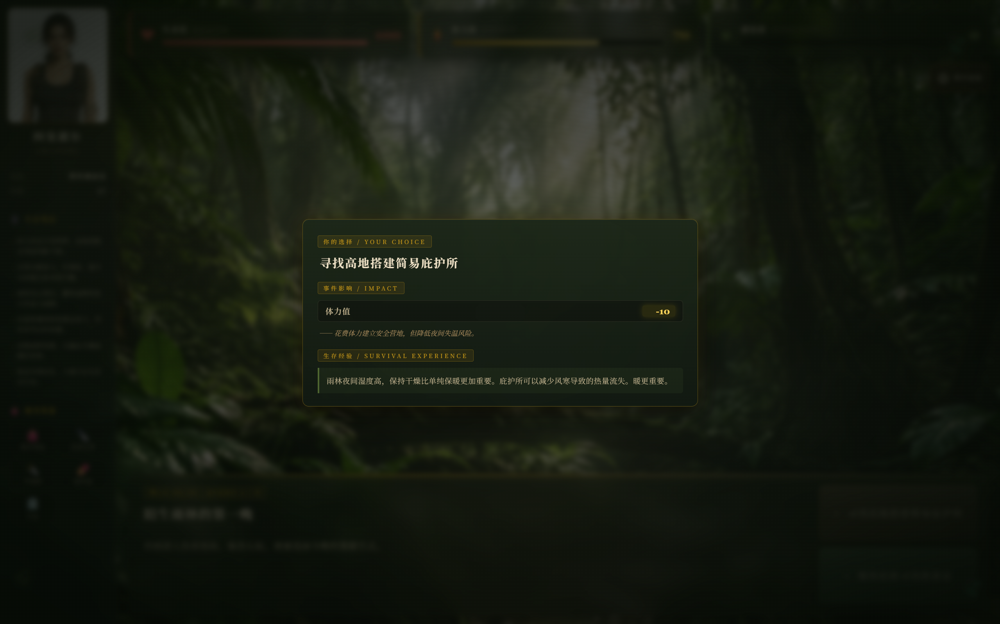
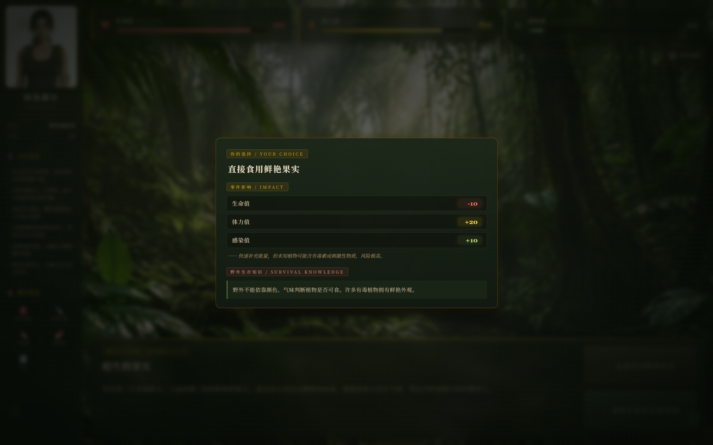
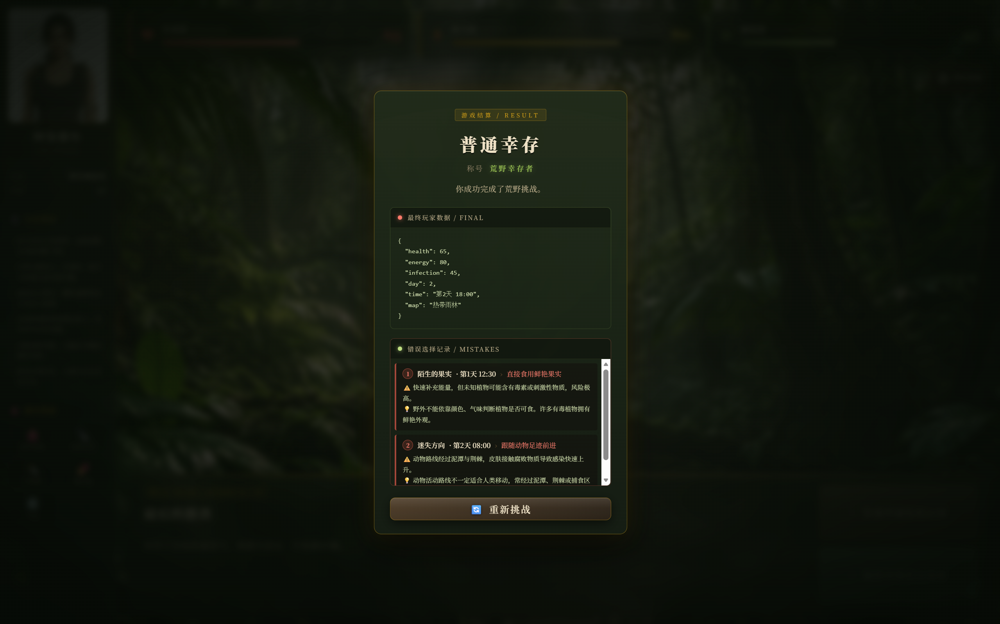

WORK / PROJECT 01

荒野求生日志
WILDERNESS SURVIVAL LOG
《荒野求生日志》是一款网页生存选择类小游戏，通过事件选择、状态变化和时间推进机制，让用户体验模拟生存过程。
WILDERNESS SURVIVAL LOG
《荒野求生日志》是一款网页生存选择类小游戏，通过事件选择、状态变化和时间推进机制，让用户体验模拟生存过程。
在 AI 辅助开发逐渐普及的环境下，我希望验证一个完整的产品闭环：不依赖游戏引擎，仅用网页三件套完成一款有叙事感的互动小游戏。生存题材天然具备"选择—后果"的张力，适合作为事件系统与状态机制的载体。
项目同时是我数字产品设计方向的一次练习：从玩法规则、界面布局到交互反馈，全部由自己定义并实现。
通过游戏化设计和交互体验，将网页开发、用户体验设计和故事叙事结合，具体拆解为：
① 搭建一套可扩展的事件选择系统；② 让生命值、体力值、感染值三项状态真实影响游戏走向；③ 用时间推进制造生存紧迫感；④ 提供清晰的结局反馈，形成完整的游玩循环。
界面采用日志（Log）作为核心隐喻：玩家的每一天生存都被记录成一条日志，事件以卡片形式呈现，选择即翻页。深色底 + 高对比文字营造荒野夜晚的紧张氛围。

状态栏常驻顶部，任何一次选择都会即时反映数值变化——让玩家"看见"每一个决定的代价，这是整个体验设计的核心。
游戏循环由四个环节构成，事件驱动、状态闭环：
按天数与权重抽取随机事件
在 2-3 个选项中做出决定
生命 / 体力 / 感染值变化
进入下一天或触发结局


第一阶段完成玩法设计：编写事件池、状态规则与结局判定表，先用文档把数值曲线跑通；第二阶段做页面设计：确定日志式信息架构与深色视觉方案；第三阶段进入前端实现：以 TRAE 辅助开发完成事件系统、渲染逻辑与过渡动画；最后进行多轮自测，平衡数值难度。
开发中遇到的最大挑战是事件与状态的耦合：我通过把"事件 → 状态变化 → 文案反馈"抽象为统一的数据结构，让新增事件只需配置一条记录。
纯前端实现，无框架依赖，核心模块如下：
事件数据与渲染分离：事件以对象数组配置，渲染层只负责把状态映射到界面，保证了代码的可扩展性。
完成可运行的网页 Demo：实现事件系统、状态变化、选择反馈和结局展示的完整闭环。玩家平均单局 5-8 分钟，存在多结局差异，验证了玩法设计目标。

这个项目完整体现了我的数字产品设计能力、用户交互设计能力与创意项目实现能力——从一份玩法构想到一个可以被他人游玩的作品。